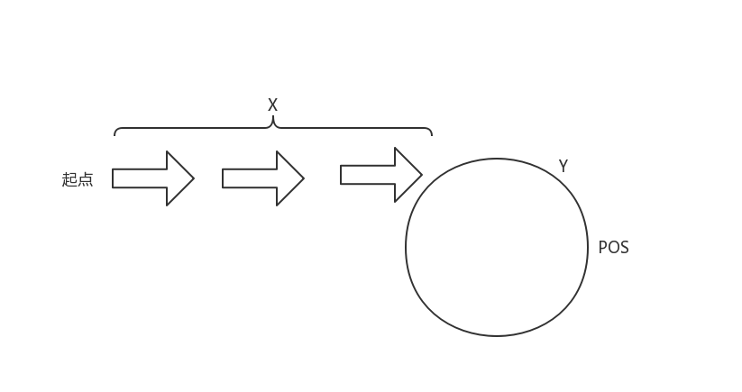

287. Find the Duplicate Number
题目解析
找到数组中重复的元素，难点在于不能修改原数组、空间复杂度O(1)、时间复杂度小于O(n^2)
方法
在这里一共n个元素，有n+1种元素，因为重复元素可以多于1，说明每个元素最多能有n-1个能放在对应索引上。
如果将元素的值作为索引，可以发现规律，比如：
1 | 输入: [1,3,4,2,2] |
将index和nums[index]看成index->nums[index]，将这个数组变成链表，上面的输入可以看成0->1->3->2->4->2，可以发现有一个环，这是因为多了一个重复的数i，在某个索引j上nums[j]为i。这样就可以使用这道链表题目的思路题目
首先有两个结论，对于快慢两个指针fast、slow，fast一次走两步，slow一次走一步：
- fast和slow会在环里面碰面，碰面地点是pos。此时slow走的距离是s，fast走过的距离是2s，因为fast一次走两步。
- slow到环口的距离与环口到链表开始节点的距离相同，也就是此时再有一个指针m，与slow同时往前走，会在环口相遇。
令： x为开始节点到环口的距离，y为环口到第一次相遇节点pos的距离，C为环的周长
证明：
- slow走的距离s = x + y
- fast走的距离2s = x + y + n*C (nC表示在环里走了很多次)
- 两式相减得 x = n*C - y = C - y，C-y是slow继续走到环口需要的距离
- 可得:slow到环口的距离与环口到链表开始节点的距离相同

时间复杂度O(N)，空间复杂度O(1)1
2
3
4
5
6
7
8
9
10
11
12
13
14
15
16
17
18class Solution {
public:
int findDuplicate(vector<int>& nums) {
if (nums.size() < 2) return -1;
int fast = 0;
int slow = 0;
do{
fast = nums[nums[fast]];
slow = nums[slow];
}while (fast != slow) ;
int i = 0;
while (i != slow) {
i = nums[i];
slow = nums[slow];
}
return i;
}
};
- 本文链接：https://ssdemajia.github.io/2019/02/25/287-Find-the-Duplicate-Number/
- 版权声明：本站所有文章除特别声明外，均采用 CC BY-NC-SA 3.0 CN 许可协议。转载请注明出处！